의공기사 (2018-03-04 기출문제)
1과목: 기초의학 및 의공학
1. 인체 하지의 골격이 아닌 것은?
- 경골
- 비골
- 요골
- 대퇴골
(정답률: 70%)

2. 온도를 측정하는 센서가 아닌 것은?
- 서머스터
- 압전 센서
- 열전대
- 금속 저항 온도계
(정답률: 89%)
3. 심장판막의 기능으로 옳은 것은?
- 심장 혈액에 영양을 공급한다.
- 심장 혈액의 역류를 방지한다.
- 혈액이 산소와 결합하는 친화성이 높다.
- 혈액의 여과, 배설 작용을 한다.
(정답률: 89%)
4. 1회 호흡을 통해 의도적으로 호흡계 안쪽 또는 밖으로 이동시킬 수 있는 최대 공기 양은?
- 폐활량(vital capacity)
- 전폐용량(total lung capacity)
- 흡기용량(inspiratory capacity)
- 기능적 잔기용량(functional residual capacity)
(정답률: 74%)
5. 세포막 평형전위에 대한 설명으로 틀린 것은?
- 네른스트 식으로 설명할 수 있다.
- 세포 내외에 존재하는 이온들의 투과성을 고려한다.
- 세포막을 통과하지 않는 이온들의 대부분의 막전위 변화를 결정한다.
- 막의 양쪽 전위차가 관찰되는데, 세포막 바깥을 기준으로 안쪽이 음의 전위를 띤다.
(정답률: 64%)
6. 광센서의 광 검출기에 대한 설명으로 틀린 것은?
- 주변의 빛에 예민하여 잡음이 발생할 수 있다.
- 광전도체나 광다이오드 같은 검출기가 많이 이용된다.
- 소형으로는 만들 수 없다.
- 검출효율이나 민감도가 좋아야 한다.
(정답률: 89%)
7. 센서에서 단위 입력 변화에 대한 출력 변화를 나타내는 것은?
- 정밀도
- 감도
- 입력 범위
- 오차
(정답률: 75%)
8. 심전도의 표준사지유도 중에서 왼발 전극에 양(+)극을, 왼손 전극에 음(-)극을 주고 두 지점간의 전위차를 기록하는 유도 방식은?
- 제1유도
- 제2유도
- 제3유도
- aVF유도
(정답률: 80%)
9. 측정센서 중 다른 센서와 다른 것은?
- 선형가변차동변환기
- 탄성게이지
- 용량성센서
- 열전쌍
(정답률: 73%)
10. 비접촉식 체온 측정이 가능한 센서는?
- 백금(platinum) 온도센서
- 서미스터(thermistor)
- 열전쌍(thermocouple)
- 초전형 센서(pyroelectric sensor)
(정답률: 65%)
11. 심전도 검사 시 의료용 페이스트(paste)가 준비되지 않았을 경우, 대신 사용할 수 있는 용액은?
- 식염수
- 증류수
- 75% 알코올
- 녹말용액
(정답률: 84%)
12. 전극을 사용하여 보다 정확한 생체전기신호를 얻기 위한 방법으로 틀린 것은?
- 표피 각질층을 벗긴다.
- 전극 리드선의 움직임이 줄어들도록 잘 고정한다.
- 피부 표면을 건조하게 한다.
- 염화이온을 이용한 젤 형태의 전해질 크림을 사용하여 접촉상태를 좋게 한다.
(정답률: 86%)
13. 5대 영양소에 해당되지 않는 것은?
- 탄수화물
- 지방
- 단백질
- 섬유질
(정답률: 89%)
14. 압전센서의 적용 범위가 아닌 것은?
- 혈당 측정
- 심음 측정
- 간접혈압측정
- 요골동맥 맥파 측정
(정답률: 76%)
15. 다음 물리현상 중 위치를 측정하는 유도성센서를 적용할 수 없는 것은?
- 두 개의 코일간의 상호인덕턴스 크기 측정
- 코일 내 삽입된 철심코어의 위치 및 크기에 따른 인덕턴스 변화 측정
- 자기 저항이 다른 코어가 코일 내에서 발생시키는 인덕턴스 변화 측정
- 소음이나 진동이 코일 내의 진동판에 전달되도록 함으로써 코일에 유도하는 전압 측정
(정답률: 71%)
16. 신경 자극 전달에서 도약전도에 관한 설명으로 틀린 것은?
- 유수 축삭에서 발생한다.
- 활동 전위는 한 랑비에 결절에서 다음 랑비에 결절로 점프한다.
- 결절에서 전류 흐름에 대해 낮은 저항성을 보인다.
- 유수 축삭에서의 전도는 무수 축삭에서의 전도보다 느리다.
(정답률: 77%)
17. 다음 전극에 대한 설명 중 잘못된 것은?
- 백금이나 금과 같은 귀금속으로 만든 분극 전극은 매우 왕성한 전기-화학적 현상이 나타나므로 전기를 잘 통하는 전극 재료로 사용된다.
- 반전지 전위는 전해질과 금속의 경계면에서 금속의 용해 또는 이온과 금속의 결합에 의해 이온이 이동함으로써 나타나는 이온-금속간의 전압이다.
- 각 금속의 반전지 전위는 1기압의 수소기체를 이용하여 만든 기준전극으로 측정한다.
- 은-염화은(Ag-AgCl) 전극은 대표적인 비분극 전극이다.
(정답률: 59%)
18. 다음은 피부표면에 부착된 전극의 전기적 등가회로에서 전극-피부의 경계면의 등가회로이다. 양단의 등가 임피던스는?
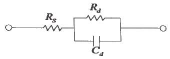
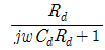
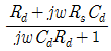
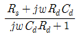
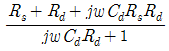
(정답률: 67%)
19. 신경세포가 자극을 받아 신경흥분이 전도될 때의 막전위 상태는?
- 안정막전위
- 활동전위
- 안정전위
- 불응전위
(정답률: 87%)
20. 체내 삽입형 센서가 가져야 하는 특성과 거리가 먼 것은?
- 소형화
- 안정성
- 전기적 절연
- 고전압 구동
(정답률: 86%)
2과목: 의용전자공학
21. 다음 중 심장의 생리적 특성이 아닌 것은?
- 흥분성
- 전도성
- 자동성
- 확장성
(정답률: 78%)
22. 진공 중에 전하량이 각각 +1C과 +2C의 두 점전하가 10m 떨어져 있을 때, 이들 전하 사이에 작용하는 힘은 몇 N 인가?
- 18×107
- 18×108
- 9×108
- 9×109
(정답률: 56%)
23. 2개의 스위치가 동시에 ON이 되었을 겨우에만 1의 출력신호가 나오는 게이트는?
- AND 게이트
- XOR 게이트
- NOT 게이트
- NOR 게이트
(정답률: 87%)
24. pn 접합의 순방향 바이어스에 대한 설명으로 옳은 것은?
- 다수 캐리어의 의한 전류는 0이 된다.
- 전도도는 온도의 영향을 받지 않는다.
- 장벽 전위가 높아진다.
- 공핍영역이 좁아진다.
(정답률: 78%)
25. 연산증폭기의 특징으로 옳은 것은?
- 매우 낮은 전압이득을 갖는다.
- 매우 낮은 입력 임피던스를 갖는다.
- 매우 높은 출력 임피던스를 갖는다.
- 매우 작은 입력 오프셋 전압을 갖는다.
(정답률: 64%)
26. 아날로그 신호를 기술하는 특성이 아닌 것은?
- 주파수
- 위상
- 진폭
- 이산성
(정답률: 87%)
27. 기억된 정보의 일부분을 이용하여 원하는 정보가 기억된 위치를 알아낸 후, 그 위치에서 나머지 정보에 접근하는 기억장치는?
- Cache memory
- Associative memory
- Virtual memory
- Main memory
(정답률: 77%)
28. 신호를 디지털 부호로 코드화해서 기억하거나 전송할 때 코드화 된 신호를 원래 형태로 되돌리는 회로는?
- 인코더
- 디코더
- 카운터
- 멀티플랙서
(정답률: 83%)
29. 프로그래밍 언어 중 기계어를 우리의 일상 언어에 가깝게 기호화한 언어는?
- machine language
- C language
- assembly language
- compiler language
(정답률: 70%)
30. 파형에 관한 설명으로 틀린 것은?
- 정현파의 평균값은 정현반파의 2배이다.
- 평균값에 대한 실효값의 비율을 파고율이라고 한다.
- 구형파는 최대값과 실효값 그리고 평균값이 모두 같다.
- 주파수와 주기는 서로 반비례한다.
(정답률: 69%)
31. 다음 회로에서 순방향 전압강하가 0.7V 인 실리콘(Si)다이오드의 단자전압과 전류로 옳은 것은?
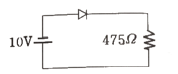
- 10V, 20mA
- 0.7V, 20mA
- 10V, 0mA
- 9.3V, 0mA
(정답률: 62%)
32. 생체 계측의 의학적 매개 변수에 포함되지 않는 것은?
- 물리적 변수
- 화학적 변수
- 사회적 변수
- 전기적 변수
(정답률: 87%)
33. 트랜스듀서와 생체 간에 어울림(matching)이 불완전하기 때문에 일어나는 현상(mismatching)에 의해 생기는 측정오차는?
- 안정도 오차(stability error)
- 반응성 오차(reactive error)
- 표본화 오차(sampling error)
- 선택도 오차(selectivity error)
(정답률: 58%)
34. 교류회로의 전력에 관한 설명으로 옳은 것은?
- 평균전력은
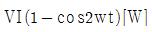
이다. - 유효전력은
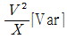
이다. - 무효전력은
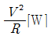
이다. - 피상전력은
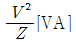
이다.
(정답률: 61%)
35. 차동증폭기에서 차동신호에 대한 전압이득은 Ad이고 동상신호에 대한 전압이득이 Ac 일 때, 동상 신호 제거비(CMRR)는?
- Ac + Ad
- Ac - Ad
- Ac / Ad
- Ad / Ac
(정답률: 76%)
36. 심전도 단극 흉부 유도법에서 유도 전극의 부착 위치가 틀린 것은?
- V1 : 제4늑간 흉골 우측 가장자리
- V2 : 제4늑간 흉골 좌측 가장자리
- V3 : V2와 V4의 중간점
- V4 : V1과 같은 높이에서 좌전액와선상
(정답률: 75%)
37. 심전도 측정시 주의사항이 아닌 것은?
- 근전도의 혼입을 방지한다.
- 기저선의 호흡성 변동에 대해서 방지한다.
- 교류장애를 피한다.
- 심전도의 기저선이 상하로 심하게 흔들려도 상관없다.
(정답률: 88%)
38. 혈관과 초음파 빔이 이루는 각도는 45°이고 음속(c)는 1500m/s, 초음파 빔의 주파수(fo) 200MHz인 장치를 사용한 결과가 도플러 주파수(fd) 10kHz일 때, 혈류 평균속도는?
- 5.3 m/s
- 10.6 m/s
- 15.8 m/s
- 21.2 m/s
(정답률: 40%)
39. 전기력선의 기본성질에 관한 설명으로 틀린 것은?
- 전기력선은 전위가 낮은 점에서 높은 점으로 향한다.
- 전기력선의 방향은 그 점의 전계의 방향과 일치한다.
- 전기력선은 도체의 표면(등전위면)에 수직으로 만난다.
- 전하가 없는 곳에서는 전기력선의 발생 및 소멸이 없다.
(정답률: 67%)
40. 주파수 변조(FM)에서 변조 지수가 6이고 신호 주파수가 3kHz일 때 최대주파수 편이는?
- 2 kHz
- 18 kHz
- 36 kHz
- 72 kHz
(정답률: 82%)
3과목: 의료안전·법규 및 정보
41. 병원정보시스템의 구축 목적에 해당하지 않는 것은?
- 인력운용의 효율성 증대
- 의학연구분야의 효과적인 지원
- 획기적인 환자 서비스의 개선
- 보험업무 창구의 자동화
(정답률: 74%)
42. 의료기기의 전기·기계적 안전에 관한 공통기준상 휴대형 ME기기에 장착한 운반용 핸들 또는 그립은 ME기기 중량의 몇 배로 하중을 핸들 및 그것의 부착수단에 정상 사용시 및 이동시의 임의방향으로 가해야 하는가?
- 1배
- 2배
- 4배
- 8배
(정답률: 76%)
43. 우리나라 의료정보시스템의 발전역사와 관계가 없는 것은?
- 1978년 경희의료원에서 전산화를 시작하여 국내 병원관리 업무 전산화의 시초를 이룸
- LIS는 1980년에 도입함으로써 미국보다 빠름
- 1960년대 컴퓨터 기반의 병원정보시스템이 출현함
- 1982년 OCS를 최초로 도입하여 90년대 초에 폭발적으로 증가함
(정답률: 72%)
44. 한국보건산업진흥원이 국내 최초로 개발된 보건기술에 부여하는 인증마크로 연구개발사업 지원 및 인센티브 혜택 등을 제공하는 것은?
- ISO 인증마크
- NET 인증마크
- EMI 인증마크
- CE 인증마크
(정답률: 65%)
45. 의료기기법령상 이미 허가를 받거나 신고한 의료기기와 구조·원리·성능·사용목적 및 사용방법 등이 본질적으로 동등한 의료기기 중 식품의약품안전처장이 임상시험에 관한 자료 제출이 필요하다고 정하여 고시하는 의료기기를 제외한 의료기기의 경우 제출하지 않아도 되는 자료는?
- 임상시험에 관한 자료
- 이미 허가받은 제품과 비교한 자료
- 사용목적에 관한 자료
- 작용원리에 관한 자료
(정답률: 65%)
46. 인체에 전류가 흘렀을 때 세포내 이온의 이동이 발생했다면 어떤 작용에 속하는가?
- 자극작용
- 열작용
- 화학작용
- 자기작용
(정답률: 69%)
47. 진단용 방사선 발생장치의 안전관리에 관한 규칙에 의거 방사선 안전에 관한 설명 주 옳지 않은 것은?
- 방사선 안전관리에는 진단 영상정보에 관한 설비의 관리와 방사선 관계 종사자에 대한 피폭 관리가 포함된다.
- 방사선 관계 종사자는 검사받은 진단용 방사선 발생장치에 대하여는 검사를 바든 날부터 5년마다 검사기관의 검사를 받아야 한다.
- 방사선구역이란 진단용 방사선 발생장치를 설치한 장소 중 외부방사선량이 주당 0.3mSv(30mrem) 이상인 곳으로써 벽, 방어칸막이 등의 구획물로 구획되어진 곳을 말한다.
- 진단용 엑스선 발생기도 진단용 방사선 발생 장치에 해당한다.
(정답률: 80%)
48. 의료정보의 특성 중 틀린 것은?
- 외적 환경에 민감하다.
- 업무가 다양하지 않기 때문에 융통성이 없어도 된다.
- 정보의 전달이 신속·정확해야 한다.
- 일괄처리보다는 온라인 실시간 처리방식이 더 적합하다.
(정답률: 84%)
49. 레이저의 안전관리 방법에 대한 설명으로 틀린 것은?
- 레이저용 보안경을 착용한다.
- 시술부위 이외의 피부에 노출을 금지한다.
- 반사 된 레이저광은 에너지가 감소되어 위험하지 않기 때문에 무시해도 상관없다.
- 노출 될 경우를 대비하여 치료 공간 내의 창문 등에 장막을 설치한다.
(정답률: 86%)
50. 의료기기분류에서 CF형장착부의 환자측정전류의 허용값은 얼마인가? (단, 정상상태인 경우로 가정한다.)
- 10μA
- 50μA
- 100μA
- 500μA
(정답률: 58%)
51. AMIA(American Medical Informatics Association)에서 제시한 의료정보학의 목표에 포함되지 않는 분야는?
- 정보의 검색과 관리
- 컴퓨터 보조학습
- 컴퓨터 조작방법의 습득
- 의무기록의 효율성 증대
(정답률: 67%)
52. 의료가스의 용도로 틀린 것은?
- 질소는 최근 제대혈 보관 등 냉동용으로 사용이 증가하고 있다.
- 탄산은 내시경 외과 수술에서 사용되는 기복장치용으로 공급된다.
- 이산화질소(NO2)는 초전도 MRI 장치에 대량 사용되고 있다.
- 에틸렌옥사이드(EO)는 수술용품 등에 대한 살균용으로 쓰인다.
(정답률: 77%)
53. 다음 중 의료기기에 해당되지 않는 것은?
- 장애인보조기구 중 의지(義肢)·보조기(補助器)
- 임신조절의 목적으로 사용되는 제품
- 질병의 진단·치료·경감·처치 또는 예방의 목적으로 사용되는 제품
- 상해(傷害) 또는 장애를 진단·치료·경감 또는 보정할 목적을로 사용되는 제품
(정답률: 76%)
54. 의료기기법령사 인체 안에 1년 이상 삽입되는 의료기기 중 추적관리대상 의료기기가 아닌 것은?
- 이식형 심장충격기
- 이식형 심장 박동기 전극
- 이식형 임플란트
- 전동식 이식형 의약품주입펌프
(정답률: 79%)
55. 물리적인 상처 및 고정이 우연히 느슨해지는 것에 대한 허용할 수 없는 위험이 없도록 설계 및 제조해야 하는 의료기기의 형태는?
- 휴대형 ME기기
- 이동형 ME기기
- 환자를 지지하기 위한 ME기기
- 손으로 잡는 ME기기
(정답률: 83%)
56. 의료용기기의 전기충격 보호정도에 따른 분류 중 인체에 전극을 장착할 수 있는 장치로 환자누설전류는 정상상태일 때 0.01mA, 단일 고장상태에서 0.⑤mA 이하의 전류가 흐르는 의료기기 정착부는?
- B형장착부
- BF형장착부
- C형장착부
- CF형장착부
(정답률: 68%)
57. 접지공사의 목적으로 올바르지 않은 것은?
- 기기 절연물이 열화 또는 손상되었을 때 흐르는 누설전류로 인한 감전 방지
- 저 전압 혼촉 사고가 발생하였을 때 인체에 위험을 주는 저압 전류를 대지로 흘리어 감전을 방지
- 뇌해(벼락) 방지
- 송전선, 배전선, 고전압 모선(전로) 등에서 단락사고가 발생하였을 때 전원차단용 계전기를 신속하고 확실하게 동작
(정답률: 57%)
58. 의료기기를 사용 목적과 사용 시 인체에 미치는 잠재적 위해성의 정도에 따라 의료기기를 분류할 경우 4등급에 해당하는 의료기기는?
- 고도의 위해성을 가진 의료기기
- 중증도의 잠재적 위해성을 가진 의료기기
- 잠재적 위해성이 낮은 의료기기
- 잠재적 위해성이 거의 없는 의료기기
(정답률: 83%)
59. 접지공사의 종류 중 제1종 접지저항치와 특별 제3종 접지저항치로 옳은 것은?
- 제1종 : 0.1 Ω 이하, 특별 제3종 : 1 Ω 이하
- 제1종 : 1 Ω 이하, 특별 제3종 : 10 Ω 이하
- 제1종 : 10 Ω 이하, 특별 제3종 : 10 Ω 이하
- 제1종 : 10 Ω 이하, 특별 제3종 : 100 Ω 이하
(정답률: 65%)
60. 의료기기법에서 정의된 기술문서에 포함되어야 하는 자료가 아닌 것은?
- 사용목적
- 작용원리
- 시험규격
- 교정일자
(정답률: 74%)
4과목: 의료기기
61. 초음파의 물리적인 특성에 관한 설명으로 틀린 것은?
- 음파는 매질이 있을 때 전달효율이 높다.
- 음파의 속도는 주파수에 파장을 곱한 것과 같다.
- 서로 다른 매질이 혼재해 있을 때, 반사는 일어나지만 흡수와 감쇠는 일어나지 않는다.
- 서로 다른 매질이 접해 있을 때, 반사와 굴절 및 회절과 산란, 흡수와 감쇠현상이 일어난다.
(정답률: 79%)
62. 심부열을 발생하여 인체의 내·외부를 관리하는 장비로서 비만, 셀룰라이트 제거, 탈모 및 통증치료 등에 활용되는 의료기기는?
- 고주파치료기
- 간섭파치료기
- 레이저치료기
- 저주파치료기
(정답률: 65%)
63. 단극 흉부 유도법으로 심전도의 계측 시 음극(-)으로 옳은 것은?
- 왼손
- 왼발
- 오른발
- 윌슨(wilson)의 결합전극
(정답률: 57%)
64. 1.5 T의 자장세기를 갖는 MRI 장치에서 수소원자핵(Proton)의 세차 주파수는 약 얼마인가? (단, 자장 세기와 원자핵의 세차 주파수 사이의 비례상수(γ : gyromagnetic ratio)는 42.58 MHz/T 이다.)
- 128 MHz
- 64 MHz
- 47 MHz
- 1.5 MHz
(정답률: 71%)
65. 임상병리 검사실에서 기본적인 기기로서 컵속에 표본을 넣고 일정시간 회전시켜 특정한 무게를 갖는 특정 성분들끼리 서로 분리시키는 장치는?
- 원심분리기(centrifuge)
- 시료 채취기(sample)
- 전해질 검사기기(electrolyte analyzer)
- 전기영동(electrophoresis)
(정답률: 85%)
66. 인공심폐기의 구성과 역할에 대한 설명으로 틀린 것은?
- 저혈조 : 정맥 환류량이 과도할 때 저장하는 역할을 한다.
- 산화기 : 정맥 혈액에 산소를 공급하고 이산화탄소를 제거한다.
- 열교환기 : 심폐바이패스 시 저체온의 유도를 위해 사용한다.
- 심장 내 흡인장치 : 색전과 같은 미세입자들이 동맥 순환계로 들어가지 못하게 한다.
(정답률: 59%)
67. 체열진단기에서 사용하는 전자파의 대역은?
- X-선
- 고주파
- 자외선
- 적외선
(정답률: 81%)
68. X-선관의 주요 성능지표로 틀린 것은?
- 음향임피던스
- 관전압
- 관전류
- 초점크기
(정답률: 70%)
69. 마취기 시스템의 구성요소로 가장 적합하지 않은 것은?
- 증발기
- 산화기
- 순환부
- 통풍기
(정답률: 52%)
70. 심장근육에 반복적인 전기 자극을 제공하는 일종의 펄스 제너레이터(generator)는?
- Pacemaker
- Ventilator
- Chronomyometer
- Incubator
(정답률: 80%)
71. MRI의 quenching 현상과 관련 없는 사항은?
- 다량의 열 발생
- 초전도체의 용해
- 액체질소의 고화
- 초전도체의 상전도화
(정답률: 65%)
72. 신생아 보육기(Incubator)에 관한 설명 중 틀린 것은?
- 외부 공구구멍이 뚫려 있어 언제든지 처치하 수 있도록 되어있다.
- 적절한 가습이 되어야 한다.
- 온도는 대체로 섭씨 32~37°로 유지된다.
- 열 제어는 온도조절장치에 의해 자동으로 제어된다.
(정답률: 68%)
73. 감마카메라의 검출장치에 대한 설명으로 틀린 것은?
- 방사선 동위원소에서 방출된 감마선은 4방향으로 퍼져나가므로 섬광검출기는 가능하면 넓은 시야 방향으로 방사선을 검출하는 감도가 균일하여야 한다.
- 감마카메라는 Anger 카메라로 불리기도 하며 검출기에서는 위치정보를 얻기 위해 다수의 섬광 크리스탈, 광전증폭관 그리고 위치 로직 회로 등이 사용된다.
- 감마카메라의 검출장치인 섬광검출 장치는 시준기, NaI(T1) 크리스탈, 광전증폭관, 펄스 분석기 등으로 이루어진다.
- 섬광검출기의 출력은 검출된 감마선 에너지에 비례한다.
(정답률: 63%)
74. 직접측정법에 의해 혈압을 측정하고자 할 경우 구성 요소로 틀린 것은?
- 커프(cuff)
- 카테터(catheter)
- 압력 변환기(transducer)
- 증록기와 표시장치(monitor)
(정답률: 76%)
75. 뇌 신경활동으로 발생한 미세한 자기장의 변화를 고감도 자기장 측정센서로 검출하여 단기간의 뇌신경 활동을 실시간 영상으로 보여주는 기기는?
- PNS
- EOG
- ECG
- MEG
(정답률: 69%)
76. 인공심장에 대한 설명으로 틀린 것은?
- 이식성 여부에 따라 전치환 인공심장과 심실보조장치로 구분된다.
- 구동메커니즘에 따라 전기기계식, 전기유압식, 전기공압식, 유체기계식으로 구분된다.
- 혈액펌프는 연속류와 박동형을 구분된다.
- 심실보조장치는 회복불능의 자연심장을 제거하고 대체한다.
(정답률: 81%)
77. 체외충격파쇄석기에서 수중에 두 개의 전극을 설치하고 극히 짧은 시간에 고전압을 걸어 스파크 발생과 동시에 충격파를 발생시키는 방식은?
- Electro Magnetic 방식
- Piezo Electric 방식
- Laser 방식
- Spark-Gap 방식
(정답률: 79%)
78. 청력검사기 자극음의 종류에 속하지 않은 것은?
- 단락음(pulsed sound)
- 연속음(continued sound)
- 진폭 변조음(amplitue modulation)
- 주파수 변조음(frequency modulation)
(정답률: 67%)
79. 부피 조절형 인공호흡기의 특징에 해당되는 것은?
- 미리 정한 양의 가스가 전달되면 흡기를 끝낸다.
- 대상자의 기도 압력이 미리 설정한 수준에 다다를 때까지 가스가 들어간다.
- 가스의 저항에 매우 민감하다.
- 기도저항이 수시로 변하는 경우에는 매 호흡마다 전달되는 가스의 양이 달라진다.
(정답률: 55%)
80. X-선은 물질을 통과하면서 물질을 이루고 있는 원자들과 여러 가지 상호작용을 하게 되는데 그 중에서도 진단용 방사선기기에 사용되는 X-선의 에너지 대역에서는 주로 어떤 현상이 일어나는가?
- 광전효과, 미에 산란
- 미에 산란, 레일리 산란
- 광전효과, 콤프턴 산란
- 콤프턴 산란, 레일리 산란
(정답률: 80%)
5과목: 의용기계공학
81. 재료가 인장강도보다 낮은 조건에서 일정한 기간 동안 반복적으로 하중을 받게 되면 파괴가 발생할 때 나타나는 특성은?
- 인장특성
- 굽힘특성
- 피로특성
- 크리프특성
(정답률: 80%)
82. 파이로리틱 카본(Pyrolytic carbon)의 특징에 관한 설명 중 틀린 것은?
- 탄성계수가 작아서 자연 뼈와 비슷하다.
- 경도가 낮고 내마모성이 크다.
- 불활성이어서 독성이 없고 이물반응도 적다.
- X-ray 검사에 잘 보이지 않는다.
(정답률: 55%)
83. 생체조직에서 발생한 열이 전달되는 정도에 영향을 미치는 인자들의 조합으로 틀린 것은?
- 조직의 밀도, 조직의 비열, 혈류량
- 조직의 밀도, 조직의 비열, 대류량
- 혈류량, 혈액의 밀도, 혈액의 비열
- 조직의 밀도, 혈액의 밀도, 혈류량
(정답률: 61%)
84. 스테인리스강에 관한 설명 중 틀린 것은?
- 주성분은 Cr, Ni, Mo 등으로 구성된다.
- 질소는 공식 저항성뿐만 아니라 강도 증가에도 효과가 있다.
- Mo를 첨가하면 염분에 대한 내식성이 약화된다.
- 골나사, 골절판, 골못 등의 체내에 단기간 사용된다.
(정답률: 65%)
85. 생체재료의 혈액 적합성 개선을 위한 처리방법이 아닌 것은?
- 매끄러운 표면
- 친수성 표면
- 양전하가 대전된 표면
- 헤파린이 처리된 표면
(정답률: 57%)
86. 생체재료가 인공심장 판막으로 사용되기 위한 필수요건 중 틀린 것은?
- 피로강도
- 내마모성
- 혈액적합성
- 내화학성
(정답률: 58%)
87. 인장특성 중 단위가 다른 것은?
- 탄성계수
- 항복강도
- 인장강도
- 최대연신율
(정답률: 68%)
88. 방사선치료의 특이성에 대한 설명으로 옳은 것은?
- 방사선에 노출된 종양세포만이 방사선의 영향을 받는다.
- 정상세포와 암세포는 회복속도가 같다.
- 일정기간에 여러 번 나누어 치료하는 것이 많은 양의 방사선으로 한 번에 조사하는 것보다 효과적이다.
- 몇몇 종류의 암세포들은 방사선을 조사하면 세포분열이 왕성하게 일어나며, 그로 인해 산소공급 부족으로 세포괴사가 일어난다.
(정답률: 78%)
89. 인체의 중심선에서부터 인체분절이 멀어지는 동작은?
- 외전(abduction)
- 내전(adduction)
- 굴곡(flexion)
- 신전(extension)
(정답률: 82%)
90. 운동량에 관한 설명으로 틀린 것은?
- 운동량은 질량과 속도의 곱으로 나타낸다.
- 충격량은 운동량의 변화를 말한다.
- 운동량 보존의 법칙은 외부에서 힘이 작용하지 않는 한 물체 또는 계의 운동량이 변하지 않음을 의미한다.
- 완전비탄성 운동은 운동량이 보존되지 않지만 운동 에너지가 보존되는 운동을 말한다.
(정답률: 68%)
91. 인체가 강한 외부자장에 노출되었을 때 체내의 양성자가 미세한 막대자석과 같이 행동하며 자장 방향으로 정렬하는 현상을 무엇이라 하는가?
- 자화(magnetization)
- 세차(precession)
- 공명(resonance)
- 자기모멘트(magnetic moment)
(정답률: 70%)
92. 다음 항목들 중 생체조직이 나타내는 일반적인 물리적 특성으로만 나열한 것은?
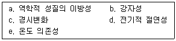
- a, d, e
- a, c, e
- b, c, d
- b, d, e
(정답률: 75%)
93. 의료용 폴리에틸렌(Polyethylene) 시편의 분자량을 측정하니 아래의 표와 같은 분자량분포(Molecular weight distribution)를 나타내었다. 이 폴리에틸렌 시편의 다분산 지수(PDI : Polydispersity index)는?
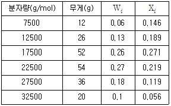
- 0.872
- 1.147
- 1.744
- 2.294
(정답률: 61%)
94. 부식저항이 뛰어나고 전기전도성이 우수하여 페이스메이커의 전극재료와 구강 내에서 뛰어난 성질 때문에 치과영역 등에서 많이 사용되는 금속재료는?
- Au
- Ag
- Pt
- W
(정답률: 69%)
95. 생체신호원인 생체전기는 전기적으로 절연체인 세포막을 중심으로 내외부로 분리되는데, 세포막의 특징으로 옳은 것은?
- 세포막의 두께는 약 10pm로 약 1kV의 세포막 전위를 형성한다.
- 세포막의 두께는 약 10nm로 약 70mV의 세포막 전위를 형성한다.
- 세포막의 두께는 약 10mm로 약 1mV의 세포막 전위를 형성한다.
- 세포막의 두께는 약 10μm로 약 5μV의 세포막 전위를 형성한다.
(정답률: 77%)
96. 응력(Stress)의 단위로 옳은 것은?
- cm
- m
- Pa
- Ω
(정답률: 82%)
97. 생체의 광학적 특성에 관한 설명 중 틀린 것은?
- 가시광선은 생체표면에서 대부분 반사된다.
- 생체 내에 흡수된 원적외선은 자기발열현상을 일으킨다.
- PPG(Photoplethysmography)는 가시광선을 이용하여 혈류량을 측정한다.
- 근적외선은 생체에 많은 양이 흡수되어 온열효과를 일으킨다.
(정답률: 43%)
98. 다음 ( ) 안에 알맞은 용어를 바르게 나열한 것은?
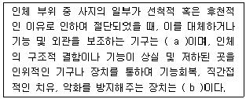
- a-의지, b-보조기
- a-임플란트, b-의지
- a-인공관절, b-보조기
- a-의지, b-인공관절
(정답률: 81%)
99. 쿨롱 이론 혹은 트레스카 이론으로 알려졌으며 주로 연성재료의 항복점을 예측하는데 사용되는 파괴 이론은?
- 최대 전단응력 이론
- 최대 전단 비틀림 에너지 이론
- 최대 수직응력 이론
- 최대 주응력 이론
(정답률: 65%)
100. 어떤 베어링의 요구되는 수명이 5000 시간이고 400rpm 으로 회전할 때 요구되는 수명에 따른 회전수(106 회전)는?
- 240
- 180
- 120
- 60
(정답률: 66%)